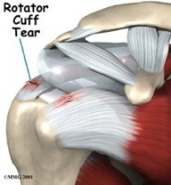

Rotator Cuff Tears – The shoulder is an elegant and complex piece of machinery. Its design
allows us to reach and use our hands in many different positions. However, while the shoulder
joint has great range of motion, it is not very stable. This makes the shoulder vulnerable to
problems if any of its parts aren’t in good working order.

The rotator cuff tendons are key to the healthy functioning of the shoulder. They are subject
to a lot of wear and tear, or degeneration, as we use our arms. Tearing of the rotator cuff
tendons is an especially painful injury. A torn rotator cuff creates a very weak shoulder. Most of
the time patients with torn rotator cuffs are in late middle age. But rotator cuffs tears can
happen at any age.
Anatomy

The rotator cuff tendons are key to the healthy functioning of the shoulder. They are subject
to a lot of wear and tear, or degeneration, as we use our arms. Tearing of the rotator cuff
tendons is an especially painful injury. A torn rotator cuff creates a very weak shoulder. Most of
the time patients with torn rotator cuffs are in late middle age. But rotator cuffs tears can
happen at any age.
Shoulder is made up of three bones: the scapula (shoulder blade), the humerus (upper arm
bone), and the clavicle (collarbone).
The rotator cuff connects the humerus to the scapula. The rotator cuff is formed by the
tendons of four muscles: the supraspinatus, infraspinatus, teres minor and subscapularis.
Tendons attach muscles to bones. Muscles move the bones by pulling on the tendons. The
rotator cuff helps raise and rotate the arm. As the arm is raised, the rotator cuff also keeps the
humerus tightly in the socket of the scapula.
The upper part of the scapula that makes up the roof of the shoulder is called the acromion. A
bursa is located between the acromion and the rotator cuff tendons. A bursa is a lubricated
sac of tissue that cuts down on the friction between two moving parts. Bursa are located all
over the body where tissues must rub against each other. In this case, the bursa protects the
acromion and the rotator cuff from grinding against each other.